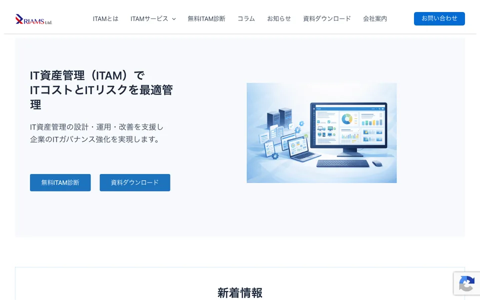
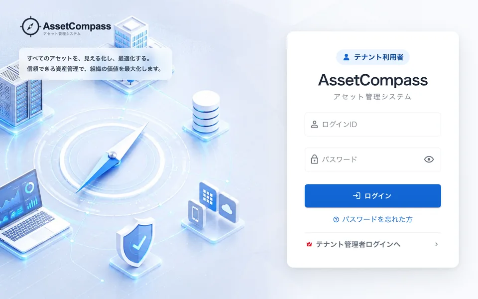
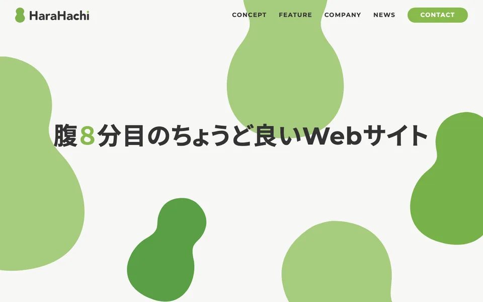
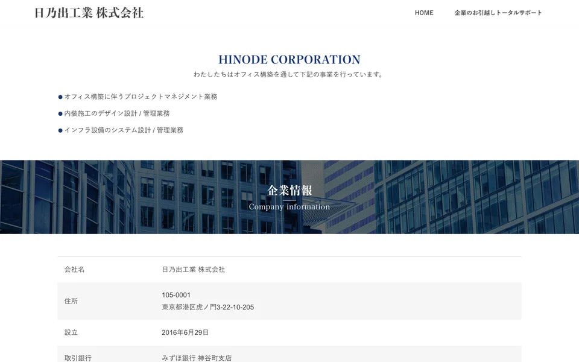

riams.co.jpリアムス株式会社asset-compass.jpAsset Compassリアムス株式会社IT資産管理システム「Asset Compass」の構築に、業務委託として携わっています。IT資産管理システム構築業務委託
harahachi.co.jp合同会社ハラハチ合同会社ハラハチ各種WordPressサイトの運用保守と、新たなインフラ基盤の構築を担当しています。WordPress運用保守インフラ新規構築
hinode-hd.com日乃出工業株式会社日乃出工業株式会社パートナーとして、拠点間VPNの構築やネットワーク機器の更改、セキュリティアプライアンスの導入支援に携わってきました。ネットワーク設計・構築VPNセキュリティ